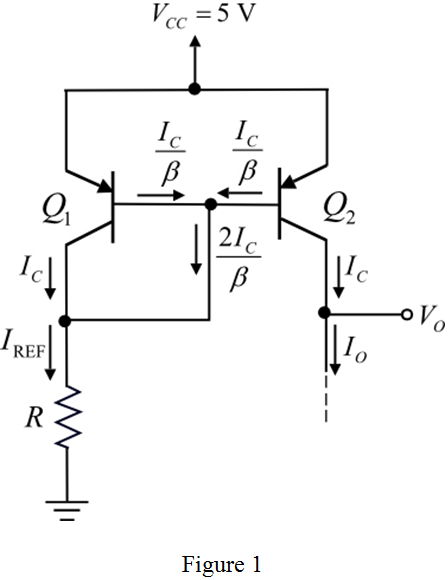

Consider the pnp transistors are matched.
From the Figure 1, the current transfer ratio is,
Substitute  for
for  , 50 for
, 50 for  to calculate the reference current.
to calculate the reference current.
Hence, the value of reference current, is,  .
.
Refer to Figure P7.58 in the textbook for the current source circuit diagram.
The modified circuit is shown in Figure 1.

Consider the pnp transistors are matched.
From the Figure 1, the current transfer ratio is,
Substitute for , 50 for to calculate the reference current.
Hence, the value of reference current, is, .
The current voltage characteristics on the active region of transistor  is,
is,
Substitute 1 mA for , for  , 25 mV for
, 25 mV for  , and for .
, and for .
Apply antilogarithm on both sides.
From the Figure 1, the base voltage of transistor  is,
is,
 .
.
Therefore, the value of resistance, R is, .
The current source continues to operate properly if the transistor works in saturation mode.
The maximum allowed value of  is,
is,
Hence, the maximum allowed value of  is, .
is, .
Calculate the value of output resistance.
The change in output voltage from maximum positive value to is,
It is known that the output resistance is,
Substitute  for , 9.7 V for
for , 9.7 V for  .
.
Calculate the percentage changes in output current.
Hence, the percentage change in output current is, .